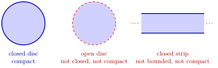

Compact Set¶
Definition¶
Consider a space in which open sets are defined. A subset of is called compact if every open cover of has a finite subcover.
Interpretation¶
Compactness is a finiteness property for sets that may contain infinitely many points: however a compact set is covered by open sets, finitely many of them already do the job. Arguments that are easy for finitely many objects, such as taking the largest of finitely many numbers or the smallest of finitely many radii, can therefore be carried over to a compact set.

The figure shows the two ways compactness fails in . The open unit disc is covered by the open discs of radius around the centre, , but finitely many of them only cover the largest one used, so points near the rim are always missed. The strip is covered by the open discs of radius around the origin, and finitely many of them stay inside one bounded disc. In these are the only two obstructions: by the Heine-Borel theorem a set is compact if and only if it is closed and bounded.
Compactness is what makes optimal points exist. By the extreme value theorem on compact sets, a continuous function on a nonempty compact set attains its maximum and minimum, which is why later optimization problems check that the feasible set is compact before looking for a global maximum or minimum. In metric spaces, compactness can equivalently be checked with sequences: a set is compact exactly when it is sequentially compact.
Two slips are common. The definition asks for a finite subcover of every open cover; one finite cover is not enough, since the whole space alone covers any set. And "closed and bounded" characterizes compactness in , but is not the definition: in with the discrete metric, the whole space is closed and bounded, yet the open balls cover it without a finite subcover.
Key Results¶
- The set is compact if and only if it is both closed and bounded.
- Let be a function, and be a compact set. If is continuous on then the image is also compact. This result is known as continuity preserves compactness.
Examples¶
- The closed unit ball is compact.
- Any finite set in any metric space is compact. You can always pick one open set for each point; finitely many suffice.
Prerequisites¶
Related Concepts¶
Sources¶
- Math III: Analysis · Lecture 9
Aliases: compact subset Keywords: compactness Symbols: element of, real numbers, subset
Last updated: 20 October 2026 03:02
Compact SetExtreme Value Theorem on Compact SetsHeine-Borel TheoremCoverSequentially Compact SetBounded SetExtreme Value TheoremOpen and Closed Sets in a Metric Space